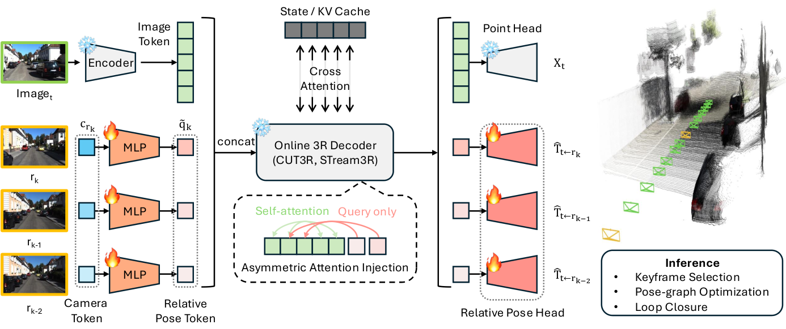
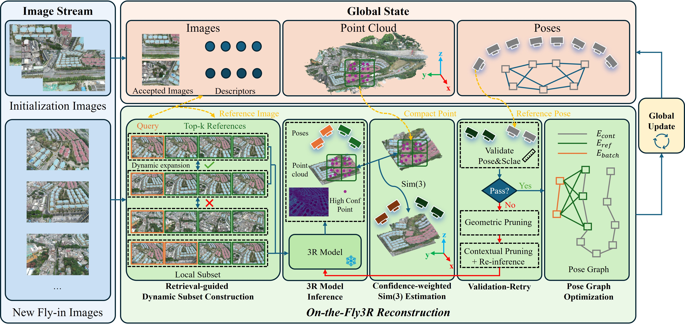
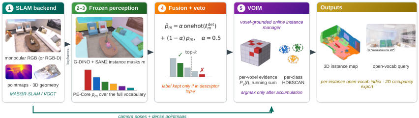
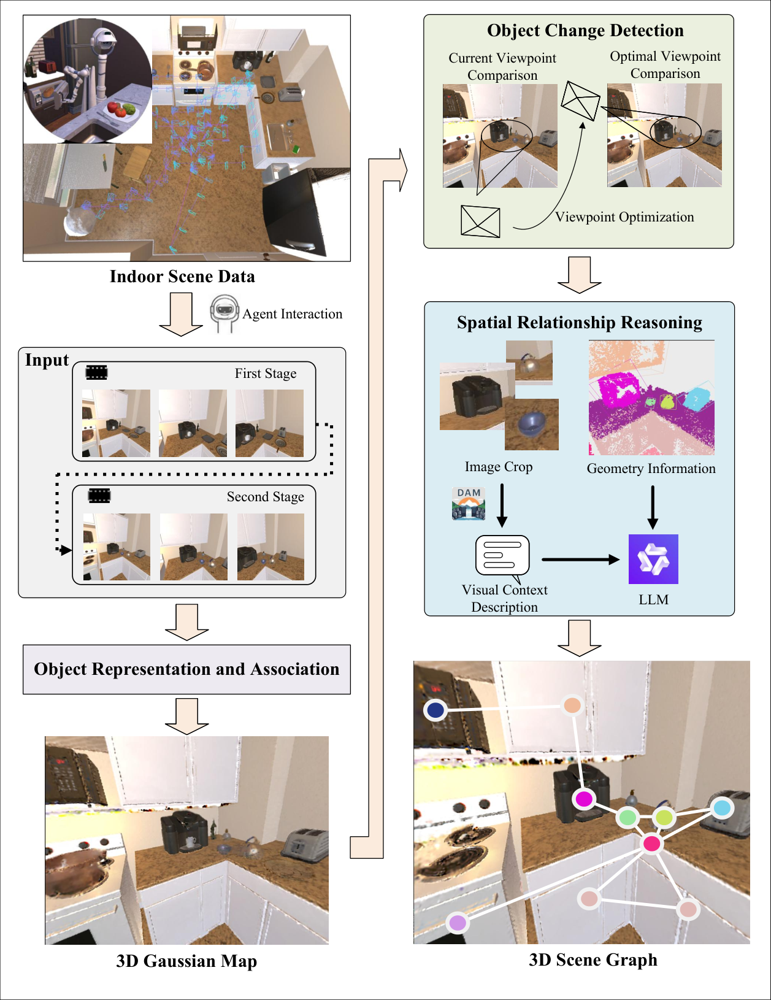
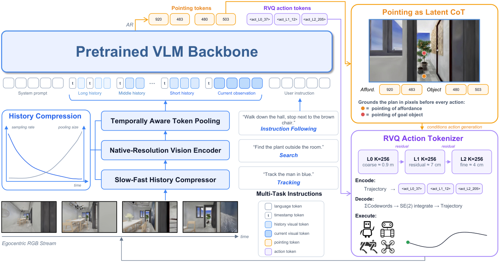
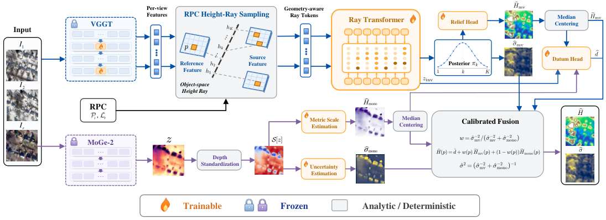

Executive Summary
前馈 3D 的长序列瓶颈正从“网络容量”转为“坐标系与状态管理”。Scal3R 证明冻结 CUT3R/STream3R 的局部几何、只学习约 1% 参数的多参考相对位姿查询，再交给 PGO/回环，能把 KITTI 平均 ATE 从最强在线对手的 182.2 降到 69.7；On-the-Fly3R 则把传统增量 SfM 的检索、几何验证和拒绝重试重新装到冻结 3R 模型外侧，在统一帧集上将 UAV 场景 ATE 从 124.42 m 降到 18.56 m。两者共同支持的工程结论是：先限制局部问题，再验证后写入全局状态，比盲目扩大上下文更可靠。
地图输出正在从“可看”转向“可查询、可更新、可执行”。VOIM 把开放词汇证据作为逐体素软分布延迟决策，输出实例索引与占据栅格；DSG 用优化后双视角渲染检查对象迁移，再用视觉上下文与几何共同构图。但证据也明确给出边界：VOIM 的单目楼层地图受漂移限制且整体为离线速率，DSG 的双视角策略降低 MRR 的同时略损 Precision/F1，动态场景图尚非“无代价更新”。
通用导航的有效压缩点是“空间意图接口”，而不是只加模型参数。LightNav-0 用双通道指点 token 表达可行方向与目标，再用 3 个 RVQ token 解码 10 个 SE(2) 路点；其消融显示指点监督将 8 个设置平均 SR 从 54.7 提到 63.1，而 4B 之后模型放大收益混合、环境多样性仍单调有效。R2R/RxR 成功率领先单目对手，但 RxR nDTW 仍低于 DualVLN，不能把终点成功等同为轨迹质量全面领先。
Deep-read Papers
| 论文 | 系统/框架图 | 解决的问题 | 方法 / 结构 | Insight 与数学知识 | 实验与效果 | 复现与启发 | 阅读证据 |
|---|---|---|---|---|---|---|---|
| Scal3R online 3RPGO |
 Fig. 3：冻结 3R backbone、相对位姿 query、PGO/回环。点击查看原图。 |
在线 3R 在长视频中把位姿持续回归到首帧全局坐标，训练分布外的坐标外推使小漂移放大为几何坍塌；作者观察到此时逐帧深度仍稳定，故把故障定位到全局 pose head。 | 冻结 CUT3R/STream3R；历史 camera token 经 MLP 形成多参考 query，仅以 Query 身份注入 decoder，避免改变图像 token 的 K/V；相对 SE(3) 约束进入 iSAM2 PGO，配合 3D overlap 关键帧、DINOv2+SALAD 回环和状态重置。 | 核心是把不受控的绝对坐标外推改写为局部相对变换。训练损失分离旋转 Frobenius 范数与尺度对齐平移 L2；PGO 在 Lie algebra 中最小化带 Huber 核的 between-factor，协方差随时间间隔平方根增大。非对称注意力保持冻结几何表示不被 prompt 反向污染。 | KITTI/vKITTI、Sintel、TUM-Dynamic、ScanNet、7-Scenes；KITTI 经 Sim(3) 对齐平均 ATE 69.7，对 TTT3R 182.2 降低超过 60%。vKITTI ATE 5.632；多参考训练相对单参考 15.764 显著更低。非对称注入在 vKITTI 为 5.63，而对称 VPT 为 57.78。约 8 小时、单 A100 收敛。 | 适合把已有 streaming 3R 改造成“局部约束前端 + 可诊断图优化后端”。风险在冻结 backbone 的遮挡/弱纹理失效、手工关键帧/回环阈值和强视角/光照变化漏回环。代码链接只到项目页，未发现公开实现，暂不可复现。 | 全文级。阅读 arXiv HTML Intro、Method 3.1–3.4、Experiments 4.1–4.4、Appendix 的 runtime/额外消融、Conclusion/Limitations；视觉确认 Fig. 3。 |
| On-the-Fly3R UAVtraining-free |
 Fig. 2：检索建局部集、Sim(3) 对齐、validation-retry 与 pose graph。点击查看原图。 |
现有 chunk/streaming 3R 假设强时间连续和局部重叠，面对航带交叉、多相机、多架次、弱序 UAV 图像会把错误局部重建写入全局，触发级联漂移；同时全局 attention 无法容纳数千图像。 | 以冻结 Pi3x 等 3R 为局部重建器：从全局地图检索共视参考构成动态子集，置信度加权估计 Sim(3)；位姿/尺度检查失败后先几何或上下文裁剪坏参考再重推理；通过后才融合。最终图包含 reference、batch、temporal-continuity 三类边，以 Huber 鲁棒核在 SE(3) 优化。 | 把“是否写入地图”作为一等决策，等价于给增量估计增加事务式 commit gate。局部 Sim(3) 处理 3R 输出的尺度自由度；验证/拒绝减少污染传播，PGO 再分配已接受约束的累计误差。可靠性与覆盖率必须同时报告，否则拒绝困难帧会制造选择偏差。 | GauU-SceneV2 424–1500 图、UrbanScene 2582/5871 图、7Scenes；六个 UAV 场景统一 11,595 帧集上 ATE 18.56 m，对 MERG3R 124.42 m。Pi3x dense CD 3.85 m、0.814 s/帧、17.56 GB；7Scenes VGGT-Omega 平均 ATE 2.30 cm，对 MERG3R 5.32 cm。结果均为单 RTX 4090 作者实验。 | 公开代码的 pipeline/retrieval/validation/retry/pose_graph 与论文模块一一对应，且支持 Pi3/Pi3x/VGGT/VGGT-Omega/MapAnything；但 checkpoint 和数据不随仓库分发。值得复用其 validation/retry 接口，而非把某一 VFM 写死。 | 全文级。阅读 arXiv HTML Intro、Related Work、Method III-A–F、Experiments IV-A–E、Ablation 与 Conclusion；视觉确认 Fig. 2；代码另做文件级静态审计。 |
| VOIM open vocabularyinstance map |
 Fig. 1：SLAM、冻结 2D 感知、veto、体素证据累计与实例输出。点击查看原图。 |
在线开放词汇地图若在单帧就硬提交类别/实例，会把遮挡与标签噪声固化；多数方法还依赖 RGB-D 与真值位姿，难以把单目 feed-forward SLAM 的稠密几何变成可查询实例地图。 | MASt3R-SLAM/VGGT 提供 pose+pointmap；Grounding-DINO+SAM2 提 mask，PE-Core 给全词表分布；检测标签仅在进入 descriptor top-5 时以 0.5 权重融合。每个体素累计置信度加权软分布与开放词汇 embedding，最终 argmax、kNN 平滑，再按类别 HDBSCAN 成实例；导出 occupancy grid、实例索引与 goal pose。 | “延迟硬决策”是主线：每体素后验是跨视角运行和，实例分割在聚合后进行。cross-model veto 不是一般真理，而取决于评测是否惩罚不存在类别；论文明确在 ScanNet++ 关闭、Replica 开启。单目相似变换 gauge 仍需外部尺度。 | ScanNet++ 10 场景、top-100 类，同帧/真值 pose：per-scene mIoU 44.07，对 OVO-SLAM 32.37（+11.70），10/10 场景获胜；Replica 单目 pooled/per-scene 为 27.80/23.55，前者近 OVO 27.50、后者低于 30.11。真实楼层仅演示：116 m 路径、773 实例、158 m² 连通自由空间，无 GT。 | 适合给现有稠密 SLAM 增加语义后端，但当前 semantic stream 只处理 14–22 个 keyframe、实例 harvest 是 batch、端到端为离线速率；4M×1024-D 特征约耗尽 23 GiB，建筑尺度单目又受漂移限制。未发现作者公开代码。 | 全文级。阅读 arXiv HTML Intro、Method III-A–D、Experiments IV-A–G、Navigation-Ready Maps、Limitations/Conclusion；视觉确认 Fig. 1。 |
| DSG 3D scene graphdynamic map |
 Fig. 1：语义 Gaussian map、双视角变化检测与空间关系推理。点击查看原图。 |
静态 3D scene graph 无法处理物体迁移；直接在当前视角、未充分优化的 Gaussian rendering 上比较易因遮挡与渲染伪影误删。只给 LLM 类别标签与几何也会漏掉视觉上下文关系。 | RGB-D+pose 建独立对象 Gaussian；在当前视角与最大化对象覆盖的优化视角上，对优化后的历史/当前渲染做变化检测。对象 mask 与 2.5× 周边 crop 由 DAM 生成描述，再与 3D box、位置、重叠共同送入 LLM；几何邻近先筛候选边。提出含 20 序列、3326 keyframe 的 Dyn-THOR。 | 对象变化检测可视为 observation selection：通过优化 viewpoint 提高可观测性，而不是只调相似度阈值。图节点更新与边推理耦合，残留 ghost node 会占用 Hungarian 匹配并污染关系。MRR 衡量“已消失对象仍残留”的风险，补足普通 P/R/F1。 | Dyn-THOR full dual-view：P/R/F1=51.0/33.9/40.3，MRR 2.1%；单视角为 52.8/33.7/40.7、MRR 2.6%，存在轻微精度取舍。3RScan F1 22.8，对 DynamicGSG 11.7。视觉上下文使预测边 13.6→15.5、coarse match 1.4→1.8，但 fine match 仍 0.8。 | 最大工程价值是把动态地图 QA 变成可测的 missing-object 残留率和观测视角设计。当前 edge 实验固定 Qwen3-VL-Plus，未隔离 LLM 变化；论文未给显式 limitations 小节，真实集仅 831 帧且无完整定量 GT；未发现公开代码。 | 全文级。阅读 arXiv HTML Intro、Method III-A–C、Experiments IV-A–E、Conclusion；视觉确认 Fig. 1。原文无独立 Limitations 节，边界据实验设计与结论识别。 |
| LightNav-0 VLNgeneralist |
 Fig. 2：慢快视觉历史、双通道 pointing、RVQ trajectory token。点击查看原图。 |
VLN、ObjectNav、目标跟踪常各自依赖 waypoint head、地图或专用 action expert，跨任务/机器人复用弱；把连续轨迹直接放在 LM 外部又难以用 token-level RL，全部历史帧则造成上下文无界增长。 | 以 Qwen3-VL-4B 为单一 backbone；历史按时间年龄指数降低采样率并增加池化步长。先输出 affordance/object 两个图像网格 token，再用 3 层、各 256 codeword 的 RVQ 把 10 个 SE(2) 路点压成 3 token；ER mid-training、DAgger SFT、按任务终止奖励的 GRPO/RL；共享 WebSocket/ROS 2 低层轨迹跟随接口。 | 指点 token 是任务无关的“空间意图”，RVQ 把连续控制变成可给策略梯度精确求 log-prob 的短离散序列；Jacobian-weighted trajectory distance 同时约束位置与累计航向。模型、数据、环境三条 scaling 曲线显示环境覆盖是测试范围内最稳定的杠杆。 | 单目无 depth/odom：R2R SR/SPL 68.5/62.8，RxR 73.6/64.5；RxR nDTW 67.4 仍低于 DualVLN 70.0。MP3D ObjectNav SR/SPL 53.3/21.2；指点消融使 8 设置平均 SR/SPL 54.7/34.3→63.1/40.0。EVT distractor SR 82.6。真实四种机器人为定性零样本展示。 | 仓库含模型服务、Habitat/EVT 评测、MuJoCo demo、ROS 2 client/MPC 和多套测试，交付完整度高于只放 checkpoint 的项目。仍需 HF 权重、GPU server；真实机器人安全由 adapter watchdog/低层控制负责，本轮未运行。 | 全文级。阅读 arXiv HTML Intro、Architecture III-A–F、Data/Training、Experiments VI-A–F、Ablation/Scaling、Conclusion；视觉确认 Fig. 2；仓库另做文件级审计。 |
| Failure or Drift? robustnessbenchmark |
未嵌图：全文 Figure 1 是结果组合图，不是 caption 明确指向的 overview/framework/pipeline。 | “鲁棒”常被压成一个轨迹误差，但 ORB-SLAM2 可能直接失效，学习 tracker 则持续输出却严重漂移；合成 corruption 若不能保持真实恶劣条件下的方法排序，会给工程选择错误信号。 | 在 KITTI 00 构造 65 个 image-space、35 个 geometry-aware、15 个 compound 变体；以 4Seasons 四条自然条件作外部对照。比较 ORB-SLAM2、DPVO、DROID-SLAM；先记录是否返回可评估轨迹，再在有效轨迹上分开看 APE/RPE，并用方法差值与五级严重度 Spearman 作诊断。 | 可用性与可信度是两维：有效轨迹指标 V 不应被 APE 均值吞掉；低 RPE/连续输出不保证低累计 drift。合成到真实的验证应是 proxy ladder，而不是默认等价；五点相关只能诊断，不能作强推断。 | 干净 KITTI 11 序列三法均有效，但 ORB-SLAM2 中位 APE 8.2 m、序列 01 达 518.0 m，排序受路线影响。corruption archive 中 ORB 有效为 image 37/63、geometry 15/23、compound 10/15，DPVO/DROID 对已归档尝试均持续输出。雨/雾结论转移到真实条件，晚间照明却反转方法排序；作者明确只支持 2/3 条件。 | 应在部署 CI 同时报 tracking-valid rate、累计 APE、局部 RPE、地图质量和资源稳定性，并为置信度做轨迹级校准。局限：单条 KITTI 路线、每条件一次归档执行、4Seasons 非同路线/相机配对、无 IMU/地图精度。关联仓库主要是大体量结果档案，不计本期 repo deep dive。 | 全文级。阅读 arXiv HTML Intro、Experimental Design 3.1–3.3、Results 4.1–4.4、Discussion、Limitations/Future Work/Conclusion；未嵌非系统图。 |
| GeoRay satellite 3Dgauge |
 Fig. 2：RPC ray sampling、datum anchoring 与 calibrated fusion。点击查看原图。 |
透视相机预训练的 3D foundation model 不能直接处理非中心 RPC 卫星成像；沿高度射线的特征可观测性不足，绝对高程与传感器低阶偏差存在 height-datum gauge，单目与多视图证据又在不同区域失效。 | 冻结 VGGT 与 MoGe-2；rank-16 LoRA/轻量 adapter 让特征可沿原生 RPC 高度射线匹配，4 层 Ray Transformer 给高度 posterior/uncertainty；解析 datum anchor 加小 residual 固定绝对层级；单目、多视图 relief 中心化后按校准 inverse variance 融合。12.4M 可训练参数对 1.240B 冻结参数。 | 用一阶线性化说明垂直扰动可被 RPC bias 吸收的 gauge，并通过对垂直原点平移等变的构造固定它。PAGc 把 accuracy 与 coverage 共同计分，避免“只预测容易区域”显得准确。融合收益是条件性的：几何弱时单目 prior/校准更重要，而非全域固定增益。 | SatGauge 18 系统、L1/L2/L3 三层迁移。US3D 26 tile：绝对 MAE 2.99 m、coverage 91.9%、PAGc2.5 72.6；去 ray adaptation 匹配训练预算时 MAE 3.59→20.47 m，去 datum head 2.99→150.84 m。IARPA L2 3.21 m/86.7%；ATL-SN4 L3 23.88 m/90.7%。US3D 子集前向 24 s，EOGS 1964 s。 | 对遥感/地理建图最重要的启发是绝对坐标 gauge 必须在模型结构和评测口径中显式处理。局限为低阶 gauge basis、uncertainty 只描述 relief 不含 tile datum、固定 view 数与高度采样；作者仓库当前仅承诺“将发布”，未计 repo 深读。 | 全文级。阅读 arXiv HTML Intro、Method III-A–F、SatGauge、Experiments V-A–I、Ablation/Scope、Conclusion；视觉确认 Fig. 2。 |
{kind=link}
{kind=link}
{kind=link}
{kind=link}
{kind=link}
{kind=link}
Repo Deep Dives
| Repo | 目标与能力 | 代码结构证据 | 依赖 / 硬件 | 成熟度判断 | 领域关系 |
|---|---|---|---|---|---|
| lightorigins/LightNav-0 422★ / 28 forks 创建 2026-08-28；检查时最后 push 2026-09-03 |
公开 LightNav-0 推理、WebSocket 服务、Habitat/EVT 评测、MuJoCo TurtleBot demo 与 ROS 2 真机客户端。README 的 benchmark 数值与论文表一致；模型权重从 Hugging Face 另取。 | src/lightnav/inference/engine.py 负责 VLM/VIT cache 与生成；slowfast.py 实现历史分层；traj_vocab.py 解码 RVQ 路点；serving/ws_server.py 提供会话/批处理服务；habitat_server/、evt_bench/ 是评测端；robot_deploy/src/vln_mpc 用 CasADi MPC，Go2/TRON adapter 有安全测试。仓库含约 2453 blobs 与较完整 tests。 |
Python 3.11；Qwen3-VL/vLLM/PyTorch，GPU host；ROS 2 Humble 真机端、CasADi、Orbbec/机器人 SDK；MuJoCo demo 客户端可无 GPU。Dockerfile 与多份部署/协议文档齐全。 | 较高但未运行。Apache-2.0、公开 1 issue/0 PR、无 release tag；最近提交继续补 demo/README。代码、测试、文档、模拟与真机链路同仓，超过论文占位级；本轮未下载 checkpoint，未验证服务时延和真实机器人安全。 | VLN / ObjectNav / embodied tracking 的工程化参考，尤其适合研究“高层空间 token → 通用几何轨迹 → 各平台低层控制”的接口边界。 |
| Sh1nZzz/On_the_Fly3R 10★ / 1 fork 创建 2026-08-13；9 commits；最后 push 2026-09-02 |
把多种冻结 3R backbone 扩成大规模增量重建：检索建 batch、Sim(3) 对齐、验证/两阶段重试、在线与最终 pose graph、PLY/pose/诊断导出、Viser 查看器。 | run_on_the_fly3r.py 是 CLI；pipeline.py 的 IncrementalReconstructor 组合 Retrieval/Alignment/Validation/Retry/Fusion/PoseGraph mixin；retrieval.py 管 SupScene feature bank；retry.py 有 register/geometry reference pruning；pose_graph.py 约 1094 行，含 edge、snapshot、在线 worker 与鲁棒 residual；vfm_adapter.py 适配 Pi3/Pi3x/VGGT/VGGT-Omega/MapAnything。仅 2 个显式 tests。 |
Linux、Python 3.11、PyTorch/CUDA；GTSAM、SupScene、Pi3 等外部仓库/权重；论文实验 RTX 4090 24 GB。setup.sh 会初始化嵌套 submodule 并打兼容 patch，复现依赖链较长。 |
中等、快速演进。Apache-2.0、41 个 blobs、无 issues/PR/releases；核心模块与论文一一对应，配置和输出诊断完整，但外部权重/数据不含在仓库，测试覆盖偏薄，本轮未安装或跑数据。 | Feed-forward 3D / 大尺度 UAV mapping / SLAM backend；其“validation before fusion”最值得抽象成通用增量地图守门器。 |
| ChiyunNoh/TRaIL-Odom 14★ / 0 forks 创建 2026-08-23；检查时 1 commit；最后 push 2026-09-04 |
RA-L 2026 的 ROS 2 雷达-IMU-LiDAR 连续时间里程计；根据 LiDAR 方向退化性对逐 radar Doppler residual 和整 scan radar gain 自适应加权，并提供 Boxi/GaRLILEO 配置。 | src/core/estimator.cpp 用 Ceres 组装 IMU gyro/acc、gravity、bias、spline、LiDAR point-to-plane 与 radar factor；include/factor/radar_factor.hpp 实现普通与退化子空间投影 residual；src/core/trail.cpp 驱动多线程 ROS 2、状态发布和轨迹保存；dataset/*/config.yaml 明确 topic、权重与队列；launch/ 给两套 rosbag 入口。76 个代码/配置 blobs。 |
Ubuntu 22.04、ROS 2 Humble、C++17、Ceres 2.2、PCL 1.13、Eigen 3.4、Zenoh RMW；含 Docker，但需递归 submodule 与 rosbag。公开数据位于 Google Drive，未下载。 | 研究原型，未验证。MIT、1 issue、0 PR、无 releases，仓库历史仅初始提交；代码量和接口足以审计方法落点，但没有 tests/CI 证据。本轮未编译，也未验证作者所报 13 序列指标。 | 多传感器 odometry / 退化感知融合。与本期 Scal3R/On-the-Fly3R 的共同点是让约束权重随可观测性变化，而非固定相信每个输入。 |
Quantitative Experiment Highlights
| 来源 | 数据集 / 场景 | 指标 | 结果 | 解释边界 |
|---|---|---|---|---|
| Scal3R | KITTI 长序列 | 平均 ATE ↓ | 69.7；TTT3R 182.2，作者称降幅 >60% | Sim(3) 对齐后；单位随 KITTI 轨迹尺度，未独立复现。 |
| Scal3R 消融 | vKITTI | ATE ↓ | 完整多参考 5.632；单参考 15.764；无参考 33.318 | 同时改变训练监督密度，不能外推为任意 K 单调收益。 |
| On-the-Fly3R | 6 个 UAV 场景统一 11,595 帧集 | ATE / ARE / RTE / RRE ↓ | 18.56 m / 2.78° / 10.85° / 1.52°；最强 baseline MERG3R ATE 124.42 m | 统一帧集覆盖总输入的 95.39%，避免选择性输出偏差；作者执行。 |
| On-the-Fly3R | 6 个 UAV 场景 dense reconstruction | Chamfer / 时间 / 峰值显存 ↓ | Pi3x 3.85 m / 0.814 s·frame⁻¹ / 17.56 GB；MERG3R CD 16.41 m | 同一 RTX 4090/24 GB 口径；不同 backbone 与工程实现影响运行时。 |
| VOIM | ScanNet++ 10 场景、top-100 类 | per-scene / pooled mIoU ↑ | 44.07 / 33.31；frame-matched OVO-SLAM 32.37 / 25.97 | 同帧、GT pose、全词表，但 baseline depth 来源更优；作者自行重跑 baseline。 |
| DSG | Dyn-THOR 20 序列 | F1 ↑ / MRR ↓ | 双视角 40.3 / 2.1%；单视角 40.7 / 2.6% | 降低残留 missing object 的同时 F1 略降，不能只报 MRR。 |
| LightNav-0 | R2R / RxR val-unseen，单目 | SR / SPL ↑ | R2R 68.5 / 62.8；RxR 73.6 / 64.5 | RxR nDTW 67.4 低于 DualVLN 70.0；成功率领先不等于路径一致性全面领先。 |
| LightNav-0 消融 | 8 个 VLN/ObjectNav 设置 | 平均 SR / SPL ↑ | 去 pointing 54.7 / 34.3；完整 63.1 / 40.0 | 消融保留其余模型与 action representation；作者报告。 |
| Failure or Drift? | KITTI 00 corruption archive | 返回可评估轨迹次数 | ORB-SLAM2：image 37/63、geometry 15/23、compound 10/15；DPVO/DROID 对已归档尝试均有效 | 有效不代表准确；单路线、单次归档运行，缺失配置不计失败。 |
| GeoRay | US3D 26 held-out tiles | 绝对 MAE ↓ / coverage ↑ / PAGc2.5 ↑ | 2.99 m / 91.9% / 72.6% | 在参考产品的 geodetic frame 内、无注册；不是独立测绘级正高宣称。 |
| GeoRay 消融 | US3D matched-compute / final checkpoint | 绝对 MAE ↓ | 去 ray adapter 3.59→20.47 m；去 datum head 2.99→150.84 m | 两项来自不同消融臂；不能直接相加或比较细小配置差异。 |
Supplemental Tracking Papers
| 论文 | 方向关系 | 解决的问题 | 方法 / 结构 | Insight 与数学知识 | 实验 | 证据级别与后续动作 |
|---|---|---|---|---|---|---|
| Z3D | 3D foundation model / novel depth | 从已有视角的 3DFM 内部表示推断新视角隐藏表面。 | 在 VGGT 等内部 scene representation 上做 latent diffusion，解码未见视角 pointmap。 | 把 3D 重建 backbone 的中间表示视为包含遮挡后结构的条件分布，而非只服务当前 view 的确定性特征。 | 摘要称在多个数据集生成 realistic novel-view depth；未给指标、baseline 和数值。 | 摘要级，未深读全文。需核对是否使用 GT/估计 camera、新视角范围与跨域失效。 |
| WorldReward | camera-conditioned world model | 动作执行、画质和时间动态被分散评分，长视频又稀释局部动作证据。 | VLM pairwise reward 把视频按 action 对齐切块，以结构化视觉证据判断并投票聚合 action/visual 两类偏好。 | 长时序评测应先做局部对齐再汇总；reward decomposition 可避免一个总分掩盖执行与画质冲突。 | WorldReward-Bench 上三维偏好同人类一致度均最高；摘要称比 GPT-5.5 高 3.42/1.45/3.56 个点，并提升 HY-WorldPlay 1.5 RL 后训练。 | 摘要级。需深读数据生成审计、human sample 与是否存在 teacher/reward 泄漏。 |
| Macro-action VLN | VLN-CE / closed-loop RL | 微动作 RL 决策时域长且稀疏奖励；偏航后 DAgger expert 动作歧义。 | 用 topological graph 把 VLN-CE 建成 hierarchical MDP，高层 action 是 frontier node，训练自由低层 controller 负责转移；action-aware value head + graph PPO。 | 动作抽象通过缩短有效 horizon 改变样本效率；动态 frontier 使 value 必须显式条件化可行动作集合。 | 摘要称 R2R-CE、RxR-CE 达到 SOTA，未给数值和传感器公平性。 | 摘要级。需核对 graph 构建成本、oracle 信息和低层失败如何反馈。 |
| TRaIL-Odom | radar-IMU-LiDAR odometry | 固定 radar residual 权重忽略 LiDAR 几何的方向退化与 scan 变化。 | 从 LiDAR 信息几何提取弱平移子空间，对逐 Doppler constraint 方向加权，再按 scan anisotropy 调全局 radar gain；连续时间紧耦合估计。 | 信息应该流向观测较弱方向，而非各向同性加权；本质是可观测性驱动的异方差 residual design。 | 13 序列；三条退化序列两模块合用相对固定权重使 RMSE ATE/RTE 降 86.0%/78.5%。 | 摘要级，代码文件级另审。需复跑 Boxi/GaRLILEO 并核对退化阈值敏感性。 |
| AGC-VLN | air-ground collaborative VLN | UAV 全局视角与 UGV 局部视角缺少稳定协作接口，朴素语义通信甚至降级。 | UAV bird’s-eye view 叠加 UGV pose/goal/distance 形成共享地图；UGV 用冻结 VLM 规划道路路径，UAV 用 3D-SPF 搜索。 | 协作信息最好落到共同几何表面，而非双向语言耦合；共享 BEV 是低熵、可执行的 communication bottleneck。 | CARLA-Air Town10HD 100 episodes：joint SR 77.0%，对较弱单 agent +27.0 点，对 Travel UAV +24.0 点。 | 摘要级。需核对 pose/goal 是否含 oracle、town/seed 覆盖与通信延迟。 |
| STARS-GS | large-scale aerial 3DGS surface | 分区切断连续结构、单 Gaussian 约束忽略邻域组织、统一正则不适合异质表面。 | structure-aware partition + boundary refinement；邻域 Gaussian organization；按局部几何自适应 surface regularization。 | 3DGS 几何正则需同时作用于 primitive 与邻域拓扑，并让平滑强度随局部结构变化。 | 摘要称平均 F1 从第二名 0.640 到 0.698，相对 +9.1%；未给数据集名和完整精度/完整度拆分。 | 摘要级。需深读 partition 公平性、F1 threshold 与纹理/植被分层。 |
| AutoCompass | visual localization / public maps | 地理图像绝对位置与 heading 弱标签噪声破坏 map matcher 训练。 | 只用 raw GPS 让模型自学 heading；对位置设 tolerance region；可用时加入 SLAM/SfM 相对 pose 监督。 | 相对几何监督通常比噪声绝对朝向更稳定；弱标签可从点估计改为可容忍区域。 | 摘要称 driving 与 egocentric benchmarks 均优于依赖绝对 pose 的对手，无数值。 | 摘要级。需核对 tolerance 形式、relative pose 来源与地图域转移。 |
| InceptionGS | large-scale 3DGS / sparse coverage | 无结构采集导致局部视角稀缺；纯重建在空洞区失败，纯生成又缺 3D 一致与可控性。 | 从初始 GS 出发，只在问题区域软注入 scene/view-adaptive generative prior，保护充分观测区域。 | 生成 prior 应作为局部修复项而非全局替代；关键在不确定区域选择与 prior 权重。 | 摘要称真实大场景优于现有方法，无数据集、指标和数值。 | 摘要级。需核对问题区域 oracle、几何指标与 hallucination 防护。 |
| SA-WAM | world-action model / robotics 3D | WAM 只预测 RGB，缺少显式 3D 几何用于动作与未来状态。 | 在预训练视频 diffusion 中联合预测 action/RGB/depth；非线性把无界 depth 映到冻结 VAE 的有界输入域，无需重训 tokenizer。 | 几何通道可复用视频生成先验，但深度压缩函数会定义误差分配；预测质量与 rollout success 的相关性需分任务看。 | 摘要称 RoboCasa、LIBERO-Plus SOTA，并在 UR5 随机场景优于 baselines；无具体数值。 | 摘要级。需深读 depth 编码、joint loss、真实任务数量及 correlation 是否有因果含义。 |
| LookStep | VLN / bounded memory | 逐步动作监督数据效率低；累积帧/外部 3D tool 带来内存和算力开销。 | Language-Centric Future State 为候选动作生成进度/未来状态；Event-Driven Rolling Memory 自主决定写入并标注语义角色。 | memory write 可视为事件检测而非固定采样；语言化未来状态给多个候选动作提供更密集监督。 | R2R-CE Val-Unseen SR 49.7%，摘要称同训练设置下更省内存/数据。 | 摘要级。需核对 wall-clock、memory token、teacher 生成成本和 SPL。 |
| FOCUS | humanoid proprioceptive odometry | 有接触不等于足端 FK 可靠；拖脚、滑移、部分支撑使 binary contact 累积漂移。 | 从无人工连续标签的仿真训练每足 FK reliability；用于 blend FK/IMU velocity 并自适应 EKF observation covariance。 | 把接触从 Bernoulli gate 改为连续置信度，等价于学习异方差 measurement model，而非替换模型估计器。 | 仿真 walking ATE -83.7%；19 个真实 walking segment -70.8%；4 个动态动作 mean ATE -42.7%。 | 摘要级。需核对 baseline、传感器同步、置信度校准与跨机器人泛化。 |
| CC-4DGS | dynamic GS compression | 4DGS 的多分辨率 hash 和高维 Gaussian attribute 使每场景存储达数十到数百 MB。 | 确定性 dense hash + 小 decoder 在线合成 deformation feature；conditional autoencoder、选择量化与 residual codebook 压 canonical 属性。 | 把“可计算特征”替代“逐位置学习表”，再将外观与辅助属性分通道率失真优化。 | N3DV/Technicolor；deformation 1–3 MB，点云 3–5× 压缩，总量 20–30 MB，摘要称质量近 Swift4D、保持实时。 | 摘要级。需核对解码算力、真正 FPS、不同场景复杂度与压缩计时。 |
| HitMem | temporal 3D memory / embodied | 静态记忆与物体迁移冲突，导致全局重算或盲目重探索。 | 语义+空间 topological graph；temporal decay 调 memory activeness；检测位移时，用外部 agent trajectory 空间约束与类别常识两阶段检索。 | 记忆不是永久真值，需随时间降权；异常位移后的检索把语义 prior 与可达区域相交。 | 摘要称 Dyna-THOR 上 relocation accuracy、探索成本、任务成功均改善，无数值。 | 摘要级。需与 DSG/Dyn-THOR 名称相近数据核对是否独立、是否使用 oracle displacement。 |
| VerNav | VLN / low latency | 每步自回归 reasoning 在长导航中累积决策延迟。 | 默认批量 action verifier；熵高时才调用 generator 产 compact state evidence；VPO 静态对齐后再做 step-level RL。 | 把生成变成异常路径、验证变成 fast path；entropy 是算力路由信号。 | R2R 上 verifier-only 与代表性 LLM VLN 可比，平均每步 LLM 决策延迟降低 >10×。 | 摘要级。需核对总系统延迟、verifier candidate 生成成本和失败时 generator 触发率。 |
| Streaming4D | 4D world model / reconstruction | 先生成完整视频再重建 3D 的串行流程反馈延迟高。 | block-wise autoregressive video generation 与 incremental reconstruction 同步流水，完成一个视频块就触发几何更新并行。 | 吞吐提升来自 producer-consumer overlap；block size 决定延迟、显存与跨块一致性的折中。 | 单 RTX 4090 各分辨率一致加速，摘要给 1.24×，称保持 4D 几何/多视图一致性。 | 摘要级。需核对端到端 latency、峰值显存、block boundary artifact 与质量差异。 |
| SMG | monocular dynamic 3DGS | 遮挡/复杂运动区域约束弱，per-Gaussian deformation 易过拟合训练视角。 | Semantic Motion Graph 以低秩节点运动驱动 Gaussian；可靠节点指导邻近不可靠节点；新增 ego-exo 多视图集。 | 运动场常位于语义/空间邻域定义的低维子空间；graph smoothness 只应从可靠节点传播。 | 摘要称多个真实 benchmark 达 SOTA，无具体数据与指标。 | 摘要级。需深读语义错误传播、graph rank、ego-exo split 与几何指标。 |
| VCAR | training-free 3DGS segmentation | 蒸馏式分割逐场景训练慢且边界模糊；视角不足与各向异性 Gaussian 越界。 | 可见性加权多视图 coarse vote；围绕对象球面螺旋采样补视角；按投影 covariance 分解定位泄漏主轴，仅沿该轴压缩。 | 边界误差不仅是 label error，也是 anisotropic primitive 的几何 footprint；应做轴向而非各向同性修正。 | 摘要称 NVOS/LERF 上精度与效率 SOTA，无数值。 | 摘要级。需核对新增视角是 render 还是采集、压缩对外观的副作用及 runtime。 |
| Point-cloud JEPA World Models | 3D world model / planning | JEPA latent planning 在稀疏、无序、自遮挡点云上是否坍塌不清楚。 | 把 frozen-encoder、distribution-prior、action-sensitive 三种 JEPA 移植到点云，并只改变 observation modality。 | 运动点只占 0.3–15% 时存在 slow-feature shortcut；线性 probe 显示位置可解码、attention 落到少量运动点。3D target 可直接与当前 latent 构 goal latent。 | 摘要称三法均可规划；distribution-prior 与重评图像 counterpart 统计等价，dropout 鲁棒但最稀场景受 range noise 破坏。 | 摘要级。需深读等价检验、成功率置信区间和传感器噪声模型。 |
| 3R Confidence Calibration Audit | feed-forward 3D reliability | 3R 每像素 confidence 是 loss weight，却被下游误当 uncertainty magnitude。 | 审计 7 backbones×13 datasets 的排序、平均 level、bin consistency 与 interval coverage；用每 backbone/dataset 两常数 power law 校准。 | ranking 好不等于 calibration 好；loss optimum 也不保证 OOD uncertainty。scene-level 缺的是误差形状而非全局 shift。 | 中位 uncertainty 低估 2.4×；留一数据集拟合后 1.35×，少量目标 scene 重拟合 1.12×；仍有约 2/3 held-out scenes 超出 5 点带。 | 摘要级。高优先深读；应把其 protocol 接到 Scal3R/On-the-Fly3R 的 commit gate。 |
| When 3DGS Recovers Real Surfaces | 3DGS geometry theory | 何时 3DGS 恢复真实表面，何时用错误 billboard+view-dependent appearance 拟合训练图像。 | first-hit rendering 抽象分离 geometry/appearance，分析视差把空间纹理变成高频角信号的机制。 | 存在 angular-capacity identifiability window：容量受限时真实表面优先；无限容量可用错误不透明 billboard 完全解释图像。 | 合成 stress test 在高角容量出现 billboard；作者称标准真实采集下即使高 SH degree 仍 surface-consistent。 | 摘要级。需核对定理假设、纹理频谱、遮挡与真实集 surface GT。 |
Trends & Insights
1. 冻结 backbone，训练/解析小接口，正在成为 3D 系统的现实路线
Scal3R 只训练相对 pose query，GeoRay 只训练约 1% adapter/head，On-the-Fly3R 更完全不训 backbone；这不是“冻结即更强”，而是把 foundation model 已学好的局部几何与任务特有的坐标 gauge、增量一致性、传感器模型分开。对工程团队，这种解耦能让失败落在可诊断模块：局部几何、约束生成、校验门或全局优化。
2. “先校验再融合”比“持续输出”更接近可部署可靠性
On-the-Fly3R 的 reject/retry、VOIM 的延迟硬标签、DSG 的优化视角二次验证、TRaIL-Odom 的退化感知权重与 Failure or Drift 的 valid-vs-drift 拆分，本质都在拒绝“每个观测同样可信”。下一步应把 3R confidence calibration audit 的场景级失配接到这些门控里，并同时监控 coverage；否则系统可能通过拒绝困难输入获得漂亮误差。
3. 地图、记忆与导航正在通过低熵空间接口汇合
VOIM 输出 occupancy+instance query，DSG/HitMem 维护动态对象关系，AGC-VLN 用共享 BEV 通信，LightNav-0 用 pointing+SE(2) trajectory token 控制。共同方向不是让 VLM 直接持有所有 3D 状态，而是把语言语义投影到可查询、可约束、可执行的几何接口。这类接口更容易审计，也能与传统 PGO、MPC、EKF 共存。
4. 热闹但证据不足的方向
World model/WAM 论文密集声称同时改善生成质量与控制，但许多摘要未给任务分层数值、真实失败率或开放代码；生成式 3DGS 修复也容易把视觉完整度误当几何真实性。本期只把 WorldReward、SA-WAM、InceptionGS、Streaming4D 等放在摘要层，等待全文方法、ablation、开源训练/评测脚本或独立复现后再形成工程结论。
Evidence & Reading Coverage
| 对象 | 实际阅读/检查覆盖 | 证据等级 | 不足 |
|---|---|---|---|
| Scal3R / On-the-Fly3R / VOIM / DSG / LightNav-0 / Failure or Drift? / GeoRay | 逐篇 arXiv HTML：Abstract、Intro、Method、Experiments、关键 tables、Ablation/Analysis、Limitations/Conclusion；必要 appendix。6 张系统图按 caption/section 定位并视觉确认。 | 全文级 | 未下载 PDF 逐页对版；未复算表格、未跑代码。DSG 原文无独立 Limitations 节。 |
| 20 篇 Supplemental | 通过覆盖期 arXiv API 元数据逐条读取完整摘要，并按方向、问题、方法、insight/数学、实验声明压缩。 | 摘要级 | 未读正文、appendix 或补充材料；摘要缺失的 baseline/数值不推断。 |
| lightorigins/LightNav-0 | GitHub metadata、README、递归 tree；检查 pyproject CLI、inference engine、slowfast、RVQ decoder、WebSocket server、Habitat/EVT、MuJoCo、ROS 2 MPC/adapters、tests、最近提交。 | 文件级静态审计 | 未 clone/安装/HF 下载/运行；422★/28 forks 为快照。 |
| Sh1nZzz/On_the_Fly3R | README、递归 tree、run CLI、pipeline、retrieval、validation、retry、pose graph、VFM adapters、tests、配置、最近提交。 | 文件级静态审计 | 未获取外部 Pi3/SupScene 权重和 UAV 数据，未验证 24 GB 复现；10★/1 fork 为快照。 |
| ChiyunNoh/TRaIL-Odom | README、tree、CMake、Ceres estimator、radar factor、ROS 2 driver、dataset config/launch、commit/issue metadata。 | 文件级静态审计 | 仅 1 commit、无 tests/CI/release；未下载 Google Drive 数据、未编译 ROS 2；14★/0 forks。 |
| 关联但未计深读仓库 | abhaythomas/master_thesis_vslamlab_robustness：检查 metadata/tree，确认主要是 3850 个结果/轨迹/图表 blobs 与 VSLAM-LAB submodule；GeoRay 仓库链接当前为“将发布”入口。 | 结构/元数据级 | 前者创建于 2026-01 且主要为结果档案，后者尚无可核验实现，因此不计本期 repo deep dive。 |
| 访问与登录 | arXiv API、HTML、图片；GitHub API/公开网页/raw；均无需登录。 | 可公开访问 | 沙箱内 arXiv TLS 失败后使用获批只读网络。未访问需要登录的来源；Hugging Face 权重与 Google Drive 数据未下载，是否需登录未测试。 |
值得跟进事项
- 复现优先级 1：On-the-Fly3R commit gate。选一段有回环/弱重叠的自有 UAV 或车载序列，用同一 backbone 对比“直接融合 / validation / retry / PGO”，同时报告 accepted coverage、ATE、CD、峰值显存与坏帧恢复时间。
- 复现优先级 2：3R confidence 的场景级校准。把 2608.29705 的 power-law calibration 作为 On-the-Fly3R validation threshold 的输入，验证是否减少错误拒绝或污染写入；不要只看像素 rank correlation。
- 导航评测补齐轨迹质量。LightNav-0 若进入验证，除 SR/SPL 外固定记录 nDTW、碰撞/near-miss、决策与执行端到端延迟、watchdog 触发和跨 robot controller 的 tracking error。
- 动态语义地图要做“对象生命周期”测试。用 repeated traversal 构造 appear/move/disappear/return，比较 VOIM 延迟决策、DSG 双视角验证与 HitMem temporal decay，指标至少包括 MRR、实例 ID switch、查询成功和重探索距离。
- 等待代码。关注 Scal3R、VOIM、DSG、GeoRay 的作者仓库是否出现训练/评测脚本；在代码落地前，不把论文数值转成选型结论。
原始链接列表
- Scal3R
- On-the-Fly3R
- VOIM
- DSG
- LightNav-0
- Failure or Drift?
- GeoRay
- Z3D
- WorldReward
- Macro-action VLN
- TRaIL-Odom paper
- AGC-VLN
- STARS-GS
- AutoCompass
- InceptionGS
- SA-WAM
- LookStep
- FOCUS
- CC-4DGS
- HitMem
- VerNav
- Streaming4D
- SMG
- VCAR
- Point-cloud JEPA World Models
- 3R Confidence Calibration Audit
- When 3DGS Recovers Real Surfaces
- lightorigins/LightNav-0
- Sh1nZzz/On_the_Fly3R
- ChiyunNoh/TRaIL-Odom
- Failure or Drift? result archive
- GeoRay code placeholder